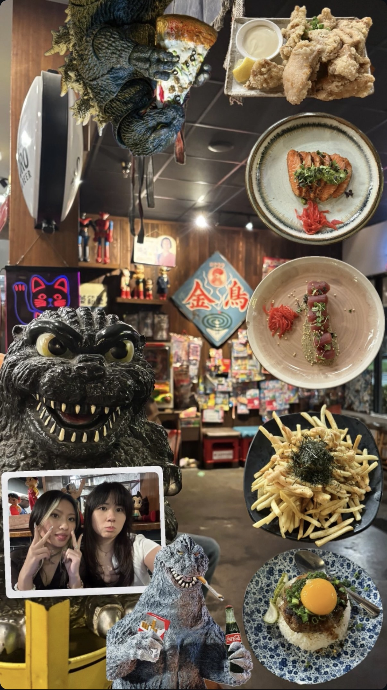

Instagram Stories — Personal Story Designs
A set of Instagram story designs I like to create when posting.
Story design #1.

Story design #2.
A set of Instagram story designs I like to create when posting.
